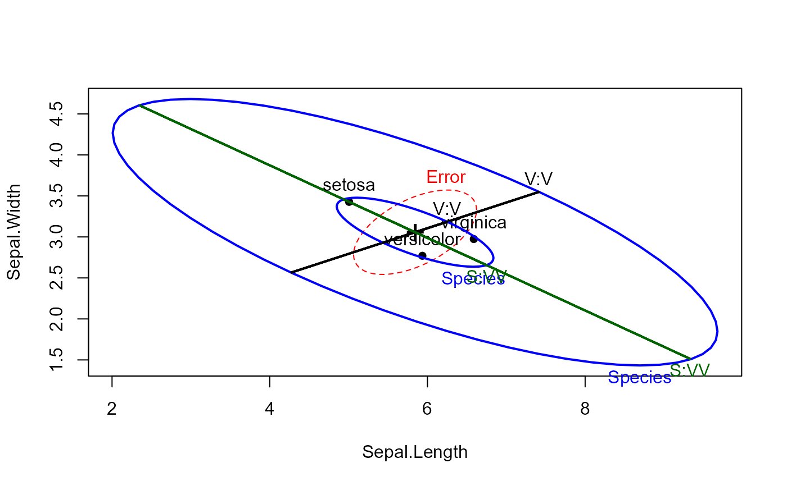
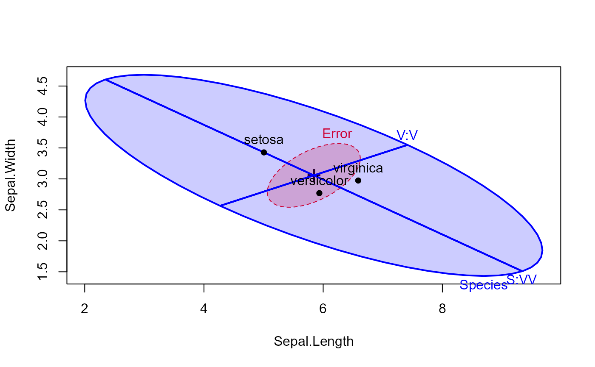
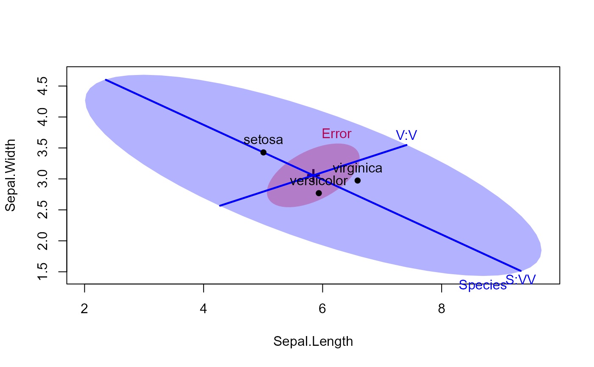
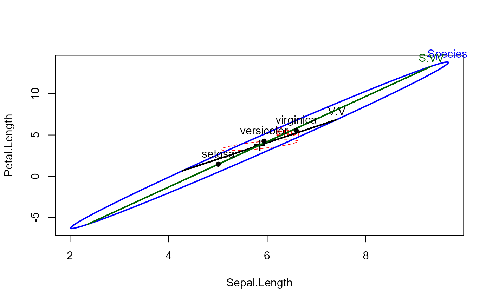
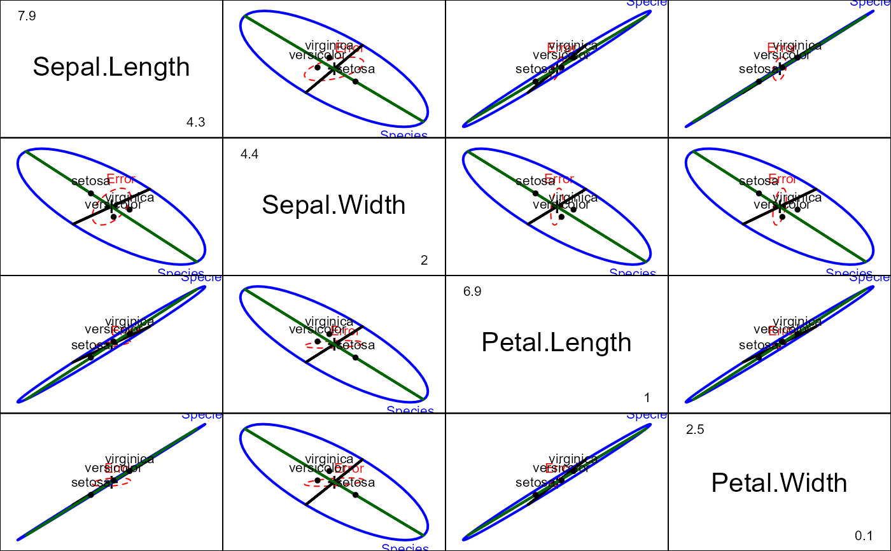
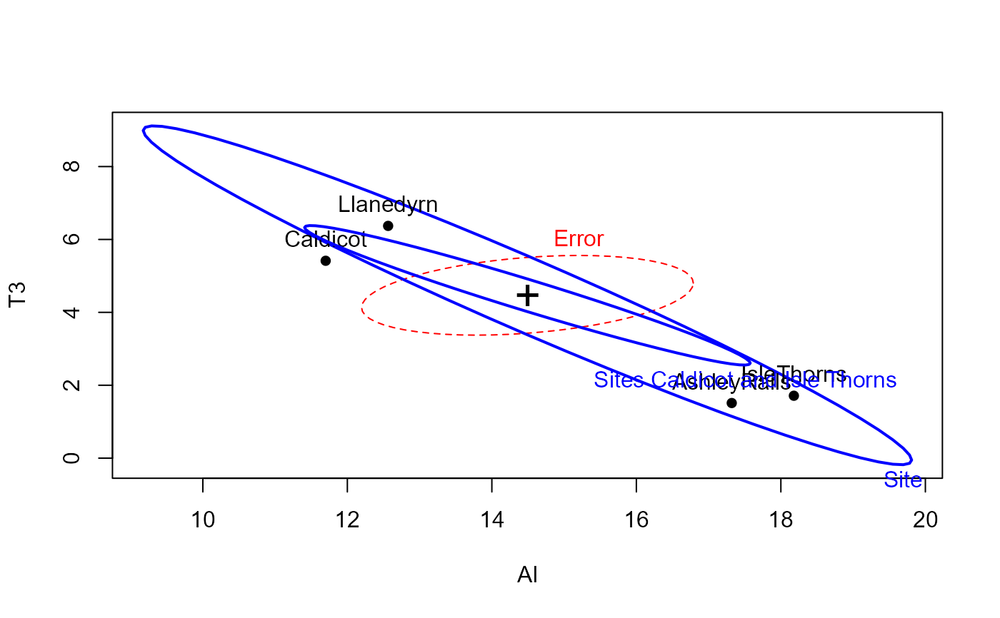
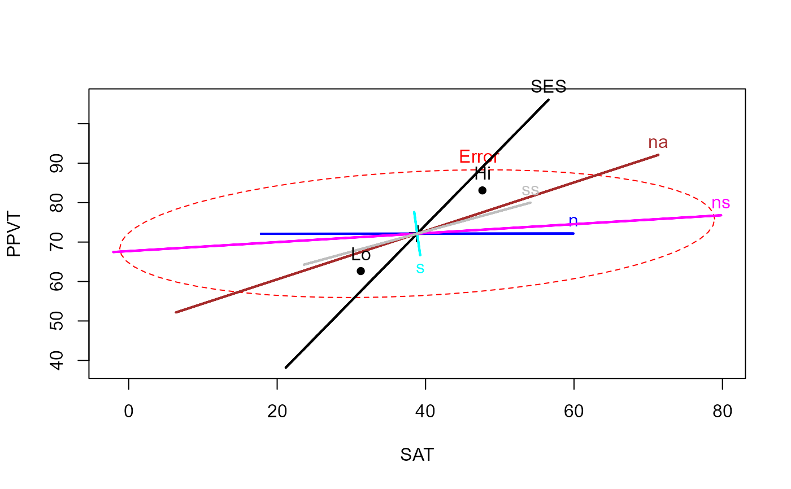
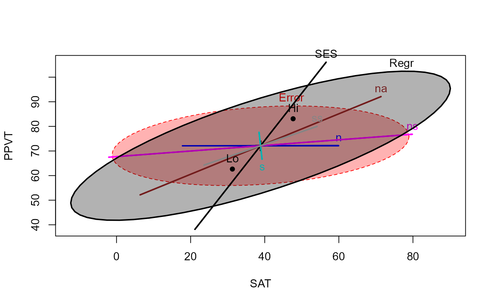
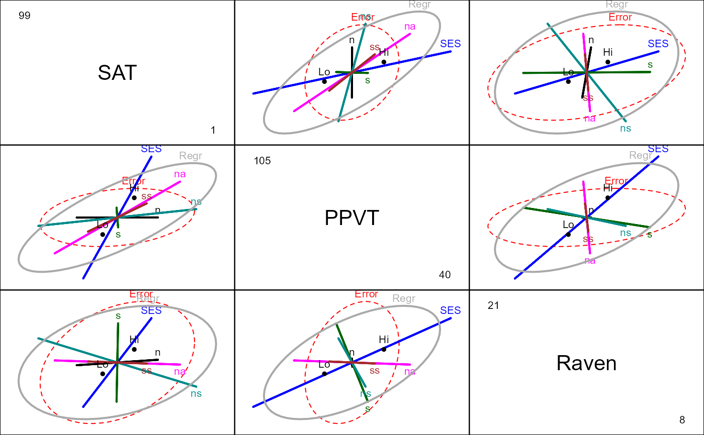

This function plots ellipses representing the hypothesis and error sums-of-squares-and-products matrices for terms and linear hypotheses in a multivariate linear model. These include MANOVA models (all explanatory variables are factors), multivariate regression (all quantitative predictors), MANCOVA models, homogeneity of regression, as well as repeated measures designs treated from a multivariate perspective.
Usage
heplot(mod, ...)
# S3 method for class 'mlm'
heplot(
mod,
terms,
hypotheses,
term.labels = TRUE,
hyp.labels = TRUE,
err.label = "Error",
label.pos = NULL,
variables = 1:2,
error.ellipse = !add,
factor.means = !add,
grand.mean = !add,
remove.intercept = TRUE,
type = c("II", "III", "2", "3"),
idata = NULL,
idesign = NULL,
icontrasts = c("contr.sum", "contr.poly"),
imatrix = NULL,
iterm = NULL,
markH0 = !is.null(iterm),
manova,
size = c("evidence", "effect.size", "significance"),
level = 0.68,
alpha = 0.05,
segments = 60,
center.pch = "+",
center.cex = 2,
col = getOption("heplot.colors", c("red", "blue", "black", "darkgreen", "darkcyan",
"magenta", "brown", "darkgray")),
lty = 2:1,
lwd = 1:2,
fill = FALSE,
fill.alpha = 0.3,
xlab,
ylab,
main = "",
xlim,
ylim,
axes = TRUE,
offset.axes,
add = FALSE,
verbose = FALSE,
warn.rank = FALSE,
...
)Arguments
- mod
a model object of class
"mlm".- ...
arguments to pass down to
plot,text, andpoints.- terms
a logical value or character vector of terms in the model for which to plot hypothesis matrices; if missing or
TRUE, defaults to all terms; ifFALSE, no terms are plotted.- hypotheses
optional list of linear hypotheses for which to plot hypothesis matrices; hypotheses are specified as for the
linearHypothesisfunction in thecarpackage; the list elements can be named, in which case the names are used.- term.labels
logical value or character vector of names for the terms to be plotted. If
TRUE(the default) the names of the terms are used; ifFALSE, term labels are not plotted.- hyp.labels
logical value or character vector of names for the hypotheses to be plotted. If
TRUE(the default) the names of components of the list of hypotheses are used; ifFALSE, hypothesis labels are not plotted.- err.label
Label for the error ellipse
- label.pos
Label position, a vector of integers (in
0:4) or character strings (inc("center", "bottom", "left", "top", "right"), or inc("C", "S", "W", "N", "E")use in labeling ellipses, recycled as necessary. Values of 1, 2, 3 and 4, respectively indicate positions below, to the left of, above and to the right of the max/min coordinates of the ellipse; the value 0 specifies the centroid of theellipseobject. The default,label.pos=NULLuses the correlation of theellipseto determine "top" (r>=0) or "bottom" (r<0). Even more flexible options are described inlabel.ellipse- variables
indices or names of the two response variables to be plotted; defaults to
1:2.- error.ellipse
if
TRUE, plot the error ellipse; defaults toTRUE, if the argumentaddisFALSE(see below).- factor.means
logical value or character vector of names of factors for which the means are to be plotted, or
TRUEorFALSE; defaults toTRUE, if the argumentaddisFALSE(see below).- grand.mean
if
TRUE, plot the centroid for all of the data; defaults toTRUE, if the argumentaddisFALSE(see below).- remove.intercept
if
TRUE(the default), do not plot the ellipse for the intercept even if it is in the MANOVA table.- type
“type” of sum-of-squares-and-products matrices to compute; one of
"II","III","2", or"3", where"II"is the default (and"2"is a synonym).- idata
an optional data frame giving a factor or factors defining the intra-subject model for multivariate repeated-measures data. See Friendly (2010) and Details of
Anovafor an explanation of the intra-subject design and for further explanation of the other arguments relating to intra-subject factors.- idesign
a one-sided model formula using the “data” in idata and specifying the intra-subject design for repeated measure models.
- icontrasts
names of contrast-generating functions to be applied by default to factors and ordered factors, respectively, in the within-subject “data”; the contrasts must produce an intra-subject model matrix in which different terms are orthogonal. The default is c("contr.sum", "contr.poly").
- imatrix
In lieu of
idataandidesign, you can specify the intra-subject design matrix directly viaimatrix, in the form of list of named elements. Each element gives the columns of the within-subject model matrix for an intra-subject term to be tested, and must have as many rows as there are responses; the columns of the within-subject model matrix for different terms must be mutually orthogonal.- iterm
For repeated measures designs, you must specify one intra-subject term (a character string) to select the SSPE (E) matrix used in the HE plot. Hypothesis terms plotted include the
itermeffect as well as all interactions ofitermwithterms.- markH0
A logical value (or else a list of arguments to
mark.H0) used to draw cross-hairs and a point indicating the value of a point null hypothesis. The default is TRUE ifitermis non-NULL.- manova
optional
Anova.mlmobject for the model; if absent a MANOVA is computed. Specifying the argument can therefore save computation in repeated calls.- size
how to scale the hypothesis ellipse relative to the error ellipse; if
"evidence", the default, the scaling is done so that a “significant” hypothesis ellipse at levelalphaextends outside of the error ellipse.size = "significance"is a synonym and does the same thing. If"effect.size", the hypothesis ellipse is on the same scale as the error ellipse.- level
equivalent coverage of ellipse (assuming normally-distributed errors). This defaults to
0.68, giving a standard 1 SD bivariate ellipse.- alpha
significance level for Roy's greatest-root test statistic; if
size="evidence"orsize="significance", then the hypothesis ellipse is scaled so that it just touches the error ellipse at the specified alpha level. A larger hypothesis ellipse somewhere in the space of the response variables therefore indicates statistical significance; defaults to0.05.- segments
number of line segments composing each ellipse; defaults to
60.- center.pch
character to use in plotting the centroid of the data; defaults to
"+".- center.cex
size of character to use in plotting the centroid of the data; defaults to
2.- col
a color or vector of colors to use in plotting ellipses; the first color is used for the error ellipse; the remaining colors — recycled as necessary — are used for the hypothesis ellipses. A single color can be given, in which case it is used for all ellipses. For convenience, the default colors for all heplots produced in a given session can be changed by assigning a color vector via
options(heplot.colors =c(...). Otherwise, the default colors arec("red", "blue", "black", "darkgreen", "darkcyan", "magenta", "brown", "darkgray").- lty
vector of line types to use for plotting the ellipses; the first is used for the error ellipse, the rest — possibly recycled — for the hypothesis ellipses; a single line type can be given. Defaults to
2:1.- lwd
vector of line widths to use for plotting the ellipses; the first is used for the error ellipse, the rest — possibly recycled — for the hypothesis ellipses; a single line width can be given. Defaults to
1:2.- fill
A logical vector indicating whether each ellipse should be filled or not. The first value is used for the error ellipse, the rest — possibly recycled — for the hypothesis ellipses; a single fill value can be given. Defaults to FALSE for backward compatibility. See Details below.
- fill.alpha
Alpha transparency for filled ellipses, a numeric scalar or vector of values within
[0,1], where 0 means fully transparent and 1 means fully opaque.- xlab
x-axis label; defaults to name of the x variable.
- ylab
y-axis label; defaults to name of the y variable.
- main
main plot label; defaults to
"".- xlim
x-axis limits; if absent, will be computed from the data.
- ylim
y-axis limits; if absent, will be computed from the data.
- axes
Whether to draw the x, y axes; defaults to
TRUE- offset.axes
proportion to extend the axes in each direction if computed from the data; optional.
- add
if
TRUE, add to the current plot; the default isFALSE. IfTRUE, the error ellipse is not plotted.- verbose
if
TRUE, print the MANOVA table and details of hypothesis tests; the default isFALSE.- warn.rank
if
TRUE, do not suppress warnings about the rank of the hypothesis matrix when the ellipse collapses to a line; the default isFALSE.
Value
The function invisibly returns an object of class "heplot",
with coordinates for the various hypothesis ellipses and the error ellipse,
and the limits of the horizontal and vertical axes. These may be useful for
adding additional annotations to the plot, using standard plotting
functions. (No methods for manipulating these objects are currently
available.)
The components are:
- H
a list containing the coordinates of each ellipse for the hypothesis terms
- E
a matrix containing the coordinates for the error ellipse
- center
x,y coordinates of the centroid
- xlim
x-axis limits
- ylim
y-axis limits
- radius
the radius for the unit circles used to generate the ellipses
Details
The heplot function plots a representation of the covariance ellipses
for hypothesized model terms and linear hypotheses (H) and the corresponding
error (E) matrices for two response variables in a multivariate linear model
(mlm).
The plot helps to visualize the nature and dimensionality response variation
on the two variables jointly in relation to error variation that is
summarized in the various multivariate test statistics (Wilks' Lambda,
Pillai trace, Hotelling-Lawley trace, Roy maximum root). Roy's maximum root
test has a particularly simple visual interpretation, exploited in the
size="evidence" version of the plot. See the description of argument
alpha.
For a 1 df hypothesis term (a quantitative regressor, a single contrast or parameter test), the H matrix has rank 1 (one non-zero latent root of \(H E^{-1}\)) and the H "ellipse" collapses to a degenerate line.
Typically, you fit a mlm with mymlm <- lm(cbind(y1, y2, y3, ...) ~
modelterms), and plot some or all of the modelterms with
heplot(mymlm, ...). Arbitrary linear hypotheses related to the terms
in the model (e.g., contrasts of an effect) can be included in the plot
using the hypotheses argument. See
linearHypothesis for details.
For repeated measure designs, where the response variables correspond to one
or more variates observed under a within-subject design, between-subject
effects and within-subject effects must be plotted separately, because the
error terms (E matrices) differ. When you specify an intra-subject term
(iterm), the analysis and HE plots amount to analysis of the matrix
Y of responses post-multiplied by a matrix M determined by the
intra-subject design for that term. See Friendly (2010) or the
vignette("repeated") in this package for an extended discussion and
examples.
The related candisc package provides functions for
visualizing a multivariate linear model in a low-dimensional view via a
generalized canonical discriminant analyses.
heplot.candisc and
heplot3d.candisc provide a low-rank 2D (or 3D) view
of the effects for a given term in the space of maximum discrimination.
When an element of fill is TRUE, the ellipse outline is drawn
using the corresponding color in col, and the interior is filled with
a transparent version of this color specified in fill.alpha. To
produce filled (non-degenerate) ellipses without the bounding outline, use a
value of lty=0 in the corresponding position.
References
Friendly, M. (2006). Data Ellipses, HE Plots and Reduced-Rank Displays for Multivariate Linear Models: SAS Software and Examples Journal of Statistical Software, 17(6), 1–42. https://www.jstatsoft.org/v17/i06/, DOI: 10.18637/jss.v017.i06
Friendly, M. (2007). HE plots for Multivariate General Linear Models. Journal of Computational and Graphical Statistics, 16(2) 421–444. http://datavis.ca/papers/jcgs-heplots.pdf
Friendly, Michael (2010). HE Plots for Repeated Measures Designs. Journal of Statistical Software, 37(4), 1-40. DOI: 10.18637/jss.v037.i04.
Fox, J., Friendly, M. & Weisberg, S. (2013). Hypothesis Tests for Multivariate Linear Models Using the car Package. The R Journal, 5(1), https://journal.r-project.org/archive/2013-1/fox-friendly-weisberg.pdf.
Friendly, M. & Sigal, M. (2014) Recent Advances in Visualizing Multivariate Linear Models. Revista Colombiana de Estadistica, 37, 261-283.
See also
Anova, linearHypothesis for
details on testing MLMs.
heplot1d, heplot3d, pairs.mlm,
mark.H0 for other HE plot functions.
coefplot.mlm for plotting confidence ellipses for parameters
in MLMs.
trans.colors for calculation of transparent colors.
label.ellipse for labeling positions in plotting H and E
ellipses.
candisc, heplot.candisc for
reduced-rank views of mlms in canonical space.
Examples
## iris data
contrasts(iris$Species) <- matrix(c(0,-1,1, 2, -1, -1), 3,2)
contrasts(iris$Species)
#> [,1] [,2]
#> setosa 0 2
#> versicolor -1 -1
#> virginica 1 -1
iris.mod <- lm(cbind(Sepal.Length, Sepal.Width, Petal.Length, Petal.Width) ~
Species, data=iris)
hyp <- list("V:V"="Species1","S:VV"="Species2")
heplot(iris.mod, hypotheses=hyp)
# compare with effect-size scaling
heplot(iris.mod, hypotheses=hyp, size="effect", add=TRUE)

# try filled ellipses; include contrasts
heplot(iris.mod, hypotheses=hyp, fill=TRUE,
fill.alpha=0.2, col=c("red", "blue"))

heplot(iris.mod, hypotheses=hyp, fill=TRUE,
col=c("red", "blue"), lty=c(0,0,1,1))

# vary label position and fill.alpha
heplot(iris.mod, hypotheses=hyp, fill=TRUE, fill.alpha=c(0.3,0.1), col=c("red", "blue"),
lty=c(0,0,1,1), label.pos=0:3)
# what is returned?
hep <-heplot(iris.mod, variables=c(1,3), hypotheses=hyp)

str(hep)
#> List of 6
#> $ H :List of 3
#> ..$ Species: num [1:61, 1:2] 9.66 9.68 9.66 9.6 9.5 ...
#> .. ..- attr(*, "dimnames")=List of 2
#> .. .. ..$ : NULL
#> .. .. ..$ : chr [1:2] "Sepal.Length" "Petal.Length"
#> ..$ V:V : num [1:61, 1:2] 7.41 7.4 7.38 7.33 7.27 ...
#> .. ..- attr(*, "dimnames")=List of 2
#> .. .. ..$ : NULL
#> .. .. ..$ : chr [1:2] "Sepal.Length" "Petal.Length"
#> ..$ S:VV : num [1:61, 1:2] 9.33 9.31 9.25 9.16 9.03 ...
#> .. ..- attr(*, "dimnames")=List of 2
#> .. .. ..$ : NULL
#> .. .. ..$ : chr [1:2] "Sepal.Length" "Petal.Length"
#> $ E : num [1:61, 1:2] 6.62 6.62 6.61 6.59 6.56 ...
#> ..- attr(*, "dimnames")=List of 2
#> .. ..$ : NULL
#> .. ..$ : chr [1:2] "Sepal.Length" "Petal.Length"
#> $ center: Named num [1:2] 5.84 3.76
#> ..- attr(*, "names")= chr [1:2] "Sepal.Length" "Petal.Length"
#> $ xlim : Named num [1:2] 2.01 9.68
#> ..- attr(*, "names")= chr [1:2] "Sepal.Length" "Sepal.Length"
#> $ ylim : Named num [1:2] -6.33 13.84
#> ..- attr(*, "names")= chr [1:2] "Petal.Length" "Petal.Length"
#> $ radius: num 1.52
#> - attr(*, "class")= chr "heplot"
# all pairs
pairs(iris.mod, hypotheses=hyp, hyp.labels=FALSE)

## Pottery data, from car package
data(Pottery, package = "carData")
pottery.mod <- lm(cbind(Al, Fe, Mg, Ca, Na) ~ Site, data=Pottery)
heplot(pottery.mod)
heplot(pottery.mod, terms=FALSE, add=TRUE, col="blue",
hypotheses=list(c("SiteCaldicot = 0", "SiteIsleThorns=0")),
hyp.labels="Sites Caldicot and Isle Thorns")

## Rohwer data, multivariate multiple regression/ANCOVA
#-- ANCOVA, assuming equal slopes
rohwer.mod <- lm(cbind(SAT, PPVT, Raven) ~ SES + n + s + ns + na + ss, data=Rohwer)
car::Anova(rohwer.mod)
#>
#> Type II MANOVA Tests: Pillai test statistic
#> Df test stat approx F num Df den Df Pr(>F)
#> SES 1 0.37853 12.1818 3 60 2.507e-06 ***
#> n 1 0.04030 0.8400 3 60 0.477330
#> s 1 0.09271 2.0437 3 60 0.117307
#> ns 1 0.19283 4.7779 3 60 0.004729 **
#> na 1 0.23134 6.0194 3 60 0.001181 **
#> ss 1 0.04990 1.0504 3 60 0.376988
#> ---
#> Signif. codes: 0 '***' 0.001 '**' 0.01 '*' 0.05 '.' 0.1 ' ' 1
col <- c("red", "black", "blue", "cyan", "magenta", "brown", "gray")
heplot(rohwer.mod, col=col)

# Add ellipse to test all 5 regressors
heplot(rohwer.mod, hypotheses=list("Regr" = c("n", "s", "ns", "na", "ss")),
col=col, fill=TRUE)

# View all pairs
pairs(rohwer.mod, hypotheses=list("Regr" = c("n", "s", "ns", "na", "ss")))

# or 3D plot
if(requireNamespace("rgl")){
col <- c("pink", "black", "blue", "cyan", "magenta", "brown", "gray")
heplot3d(rohwer.mod, hypotheses=list("Regr" = c("n", "s", "ns", "na", "ss")), col=col)
}